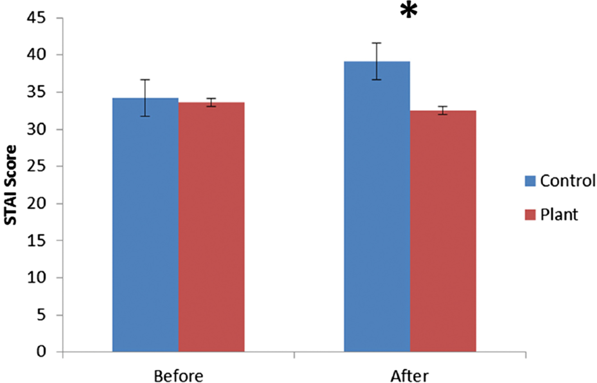

#installing packages
library(tidyverse)
library(here)
library(janitor)
library(flextable)
library(readxl)
library(ggplot2)
library(colorspace)
library(dplyr)
#create object screentime from my data
screentime <- read_xlsx(
here("data", "193DS_screentime_updated.xlsx"),
sheet = "Sheet1")homework-3
https://github.com/MarikoBron/ENVS-193DS_homework-03.git
Problem 1: Personal data
a. Data Summarizing
I am adding together five quantitative variables to calculate my perceived daily stress level including the number of classes skipped, number of tasks due, number of tasks done, number of plans cancelled, and number of hours slept(in comparison to 8 hours). I am comparing this daily self-imposed stress value to my daily screentime to look for correlations between the two values because sometimes I feel like high perceived stress pushes me to use my phone more to avoid tasks.
Edit: Hours slept and tasks due were more accurate than stress level, so I replaced chart and table.
b. Visualization
#create object screentime_clean
screentime_clean <- screentime |>
clean_names() |>
select(number_classes_skipped, number_tasks_due, number_hw_assn_done_1, number_plans_cancelled, x8_number_hrs_slept, stress_value, screen_time_h) |>
#renaming all of my columns
rename(
`classes skipped` = number_classes_skipped ,
`tasks due` = number_tasks_due,
`assignments completed` = number_hw_assn_done_1,
`plans cancelled` = number_plans_cancelled,
`8 - hours slept` = x8_number_hrs_slept,
`stress value` = stress_value,
`screentime(h)` = screen_time_h
) #change format of hours slept data- not using stress points anymore
screentime_altered <- screentime_clean |>
mutate(`hours slept` = 8 - `8 - hours slept`)
ggplot(screentime_altered,
aes(
x = `hours slept`,
y = `screentime(h)`,
color = factor(`tasks due`)
)) +
#create scatterplot, make cute
geom_point(
fill = "honeydew",
shape = 23,
alpha = 0.6,
size = 3,
stroke = 3
) +
#fixing my ink to data ratio B)
theme_minimal() +
theme(
panel.grid = element_blank(),
panel.border = element_rect(fill = NA)
) +
#add title, axis labels, color key
labs(
title = "Negative Relationship Between Screentime and Hours Slept\nand Between Screentime and Number of Tasks Due",
x = "Hours Slept",
y = "Screentime (h)",
color = "Tasks Due"
) +
#adding jitter because I realized half of my data is hidden
geom_jitter(
height = 0.15,
width = 0,
shape = 23,
alpha = 0.6,
size = 3,
stroke = 3) +
#choose colors
scale_color_discrete_sequential(palette = "SunsetDark") 
c. Caption
Figure 1: Daily screentime appears to decrease on days with more responsibilities and proper sleep.
Daily screentime(h) obtained from “screentime” feature on iPhone. Daily sleep(h) estimated from last time picking up phone every night and first time every morning. Tasks due recorded daily, midterms and finals were counted as 2 tasks each. Points were recorded frpm 04/23/25 to 05/29/25 excluding 04/27 - 05/03 due to a lack of observations. Points represent daily observations of hours slept and hours of screentime (n = 30). The colors of the points transition from yellow, which represents days with zero tasks due, and darken to purple as daily tasks increase to four.
d. Table presentation
#trying to render table
#making obect with filtered variables, ordering data by screentime
screentime_cleaner <- screentime_altered[,c("tasks due", "hours slept", "screentime(h)")] |>
arrange(`screentime(h)`)
#making table's color scheme match my plot
set_flextable_defaults(
border.color = "#f8a07e",
background.color = "#ffefc4",
font.color = "#a059a0"
)
#create a table with the intended columns
screentime_table <- flextable(
screentime_cleaner,
col_keys = c("tasks due", "hours slept", "screentime(h)"),
cwidth = 2,
cheight = 0.25,
defaults = list(),
theme_fun = theme_booktabs,
use_labels = FALSE
) |>
#rename columns
set_header_labels(
`tasks due` = "Tasks Due",
`hours slept` = "Hours Slept",
`screentime(h)` = "Screentime(h)"
)
#hopefully displaying my table this time
screentime_tableTasks Due | Hours Slept | Screentime(h) |
|---|---|---|
1 | 7 | 4.0 |
-1 | 7 | 4.0 |
3 | 8 | 5.0 |
1 | 9 | 5.5 |
1 | 6 | 5.5 |
2 | 7 | 5.5 |
2 | 9 | 6.0 |
0 | 7 | 6.5 |
3 | 5 | 6.5 |
1 | 9 | 6.5 |
1 | 8 | 7.0 |
1 | 7 | 7.0 |
4 | 6 | 7.5 |
0 | 7 | 7.5 |
1 | 7 | 7.5 |
0 | 7 | 8.0 |
1 | 6 | 8.0 |
2 | 6 | 8.0 |
0 | 8 | 8.0 |
0 | 4 | 8.0 |
0 | 8 | 9.0 |
2 | 5 | 9.0 |
0 | 7 | 9.5 |
1 | 8 | 9.5 |
2 | 6 | 10.0 |
0 | 8 | 10.5 |
0 | 8 | 10.5 |
0 | 8 | 10.5 |
0 | 6 | 11.0 |
0 | 5 | 11.0 |
Problem 2: Affective visualization
a. Describe an affective visualization
Because my study aims to measure correlations with screentime, a curiosity driven by my distress over extreme phone-driven procrastination, I want my background to be a phone. Maybe not the most creative, but I didn’t see it in any of the example visualizations. I want to use self explanatory icons to represent my data. I’m thinking something along the lines of hours of sleep being represented by how dark it is outside, or by how tired a character looks. I think I will separate my data by hours of screentime instead of by day because I find the daily data point visualizations, like the “week of goodbyes” postcard, to be a bit disorienting. I am obsessed with the environmental graffiti, but it seems a bit beyond my scope right now.
b. Sketch of my idea
c. Draft of my idea

d. Artist statement
I’m organizing my piece by hours of screentime (4-11 hours) and using silly icons to show the average sleep and business that pertains to each hour of screentime. I was not influenced by a specific piece, I stopped looking at them pretty fast because I was scared of being unoriginal. This is in the form of hand drawn cartoons that I created on my iPad.
Problem 3. Statistical critique
a. Revisit and Summarize
This paper, Physiological and psychological effects of gardening activity in older adults, uses the Wilcoxon signed-rank test, with psychological data(measured by the SDM10 and STAI self-reported tests) as the response variable and completion of a task that does and does not involve plants as the predictor variable.
 ## b. Visual clarity
This visual is quite clear in my opinion. I like the color choice, the axes are simple, and means and SE are present. They could label the values with exact numbers, which isn’t necessary but could help because the before and after for “plant” are very similar. The graph shows that anxiety increased in no plant/control groups very well, but it is hard to tell that anxiety slightly decreased with the plant/experimental group.
c. Aesthetic clarity
The data-ink ratio is well addressed, with no confusing ink present. The asterisk confused me for a bit, but I read that it is well understood to refer to a p level under 0.05. I do find the size and placement of it to be slightly offputting, but maybe being difficult to miss is what they were going for.
d. Recommendations
This is very fickle of me, but I would suggest moving the asterisk to a point where it aligns better with the graph as a whole, such as in the corner or center. I find its placement odd. Also, to show that stress did decrease for the plant group, the graph could either subtley include means or some sort of horizontal line(s). The paper is using this graph to show the difference between plant and no plant rather than before and after, but it could still be an interesting bit to include.